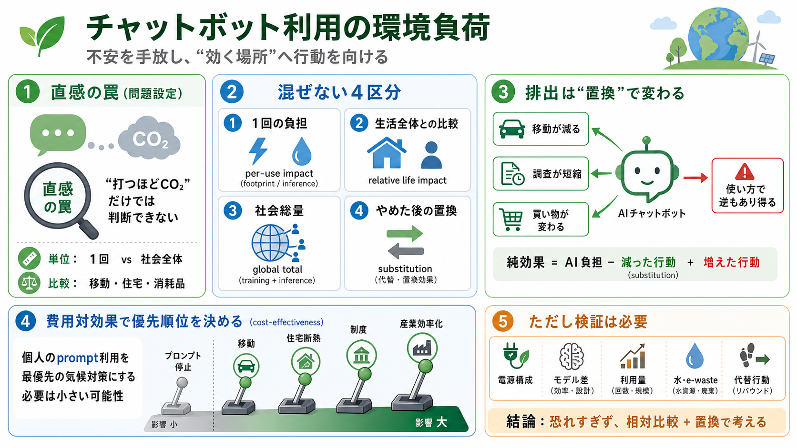

What's the carbon footprint of using ChatGPT or Gemini? ...
# What's the carbon footprint of using ChatGPT or Gemini? ### A new study from Google suggests its Gemini LLM uses aroun…

個人のプロンプト利用を「気候対策の最優先」として恐れる必要は、相対的に小さい可能性が高い。
「プロンプトを送るたびに排出が増える」と感じるのは自然だが、評価には“単位”と“比較対象”が要る。
節制したくなる“見えやすいコスト”に注目しても、気候対策としてはレバーが小さくなりがちだ。
AIの排出は事実でも、「それが何を置き換えているか」で“悪いコスト”かが変わる。
記事は、チャットボットの1回あたりのエネルギー・水負担が小さいため、個人単位では極小になりやすいと整理する。
回答を読む時間を含めると、結果的に他の物理的行動が減り、相殺が起きうるという見方が示される。
データセンターは場所として大きく見えるが、利用者単位で見ると負担が薄いという考え方がある。
個人の節制より、削減インパクトが大きいレバー（移動・住宅・制度・産業側の効率化）へ注意を向ける。
数値・推計への依存が高いのに、地域・モデル・利用形態・待機時間・代替行動の前提が本文だけでは確認できない。
環境影響は複合的（e-waste、サプライチェーン、系統運用など）。記事は主にエネルギー・水に焦点がある。
個人のプロンプト利用を“最優先の気候対策”にするのは費用対効果が低い可能性が高い。一方で数値前提と代替行動は検証が必要。
# What's the carbon footprint of using ChatGPT or Gemini? ### A new study from Google suggests its Gemini LLM uses aroun…
# The Environmental Impact of ChatGPT: A Call for Sustainable Practices In AI Development. However, as with any large la…
## Science Acumen's post. ### **Science Acumen**. The AI boom in 2025 has triggered a significant surge in energy consum…
You are using a browser version with limited support for CSS. # A comparative study of AI and human programming on envir…
How Much Carbon Does AI Actually Use? *Every AI query has a carbon footprint. Behind every ChatGPT response, every AI-ge…